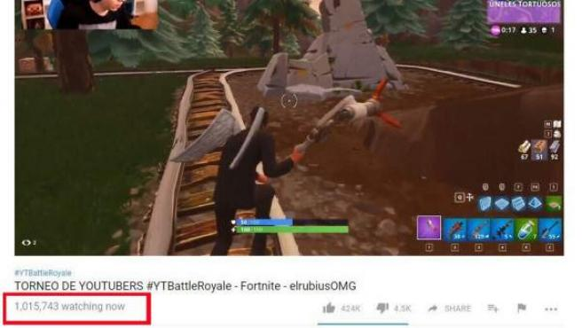

Fortnite es un videojuego del año 2017 desarrollado por la empresa Epic Games, lanzado como diferentes paquetes de software que presentan diferentes modos de uego, pero que comparten el mismo motor de juego y mecánicas. Fue anunciado en los Spike Video Game Awards en 2011. Los modos de juego publicados incluyen Fortnite Battle Royale, un juego gratuito donde hasta cien jugadores luchan en una isla, en espacios cada vez más pequeños debido a la tormenta, para ser la última persona en pie, y Fortnite: Salvar el mundo, un juego cooperativo de hasta cuatro jugadores que consiste en luchar contra carcasas, criaturas parecidas a zombis, utilizando objetos y fortificaciones. Ambos modos de juego se lanzaron en 2017 como títulos de acceso anticipado. Salvar el Mundo está disponible solo para Windows, macOS, PlayStation 4 y Xbox One, mientras que Battle Royale ha sido publicado también para Nintendo Switch, dispositivos iOS y para Android. Asimismo, se planea su lanzamiento en las consolas PlayStation 5 y Xbox Series X|S. En agosto de 2020, el juego fue retirado de la tiendas App Store y Play Store por infringir sus normas, aunque sigue disponible en la tienda oficial de Epic así como en la Galaxy Store
